[竹北] 竹北夜市
| 餐廳名稱: | 竹北夜市 |
|---|---|
| 地 址: | 新竹縣竹北市 環北路五段 與 新光二街 交叉口 |
| 營業時間: | 週六~週日 17:30~23:30 |
| 電 話: | 0960 071 638 |
這個週末因為一點意外，連續兩天晚上去竹北夜市。兩三年前，曾經收集過網友推薦過的竹北夜市攤販， 這週六來，竟然幾乎都沒有看到。週日來，一部分攤位跟週六擺在不一樣的地方，然後週日來比較多攤， 有多找到幾家 推薦名單中的攤位。
接下來，就介紹這兩天吃過的攤位，當然一定還有其他的優秀攤位，只是我剛好沒吃到。
這攤 珍菇棧脆皮杏鮑菇 很好吃，我們選傳統胡椒粉調味。兩天都有買。這攤兩天擺不一樣地方，害我以為它只來星期六，還好有找到。 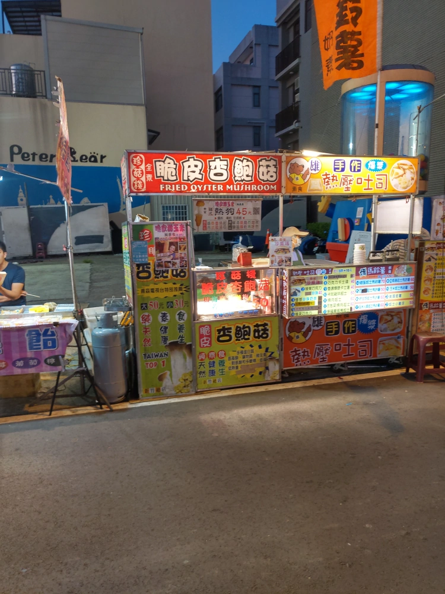
湘記高粱酒湯汁煙錢 賣的是炭烤大腸包小腸，人很多，食物製作的過程很花時間。東西不錯吃，鹹度不錯，也帶有炭香。比 東元醫院附近那攤大腸包小腸好吃多了。 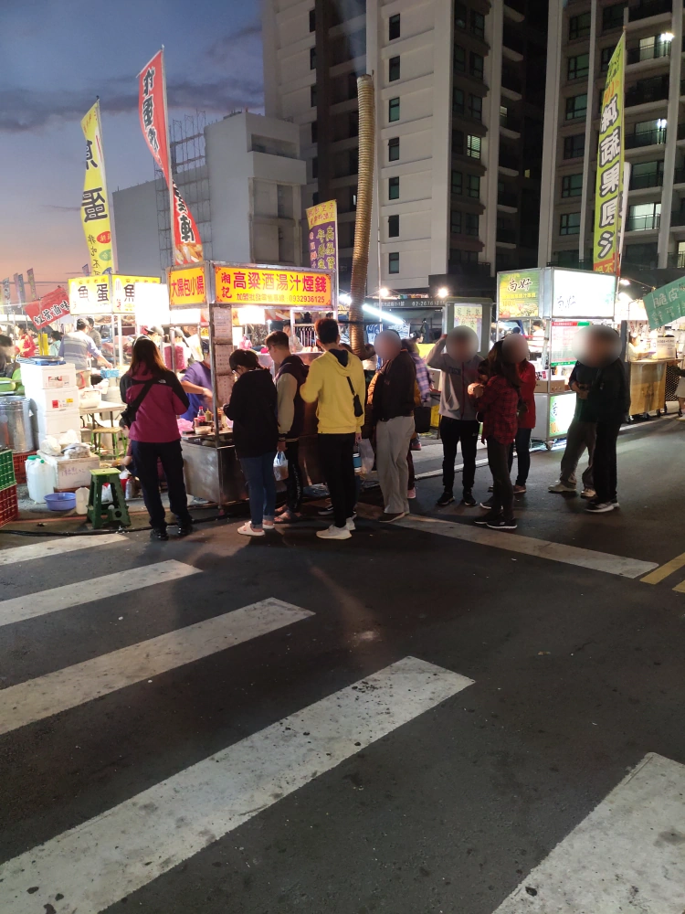
買了這攤的西瓜汁，攤位規模大，製作過程很熟練。雖然有看到她加糖、加冰塊去打果汁，最後裝杯時再加兩個冰塊，但是看的出來原料不錯，加一點糖也比較好喝。 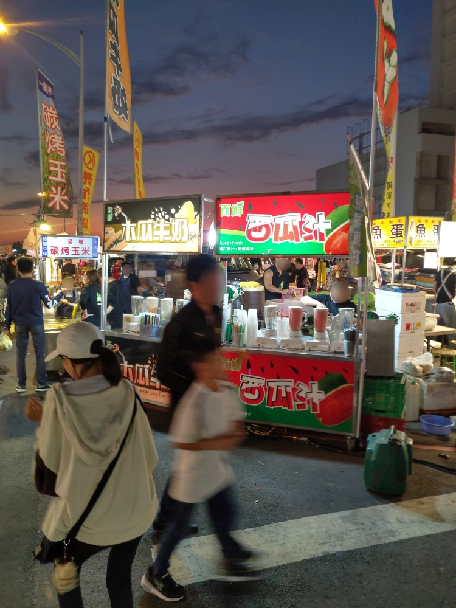
紅葉滷味 賣的是冷滷。試買一些帶回家吃，其實還可以啦，但跟竹北名店的小政滷味、可口滷味 比起來，還是輸一點點。 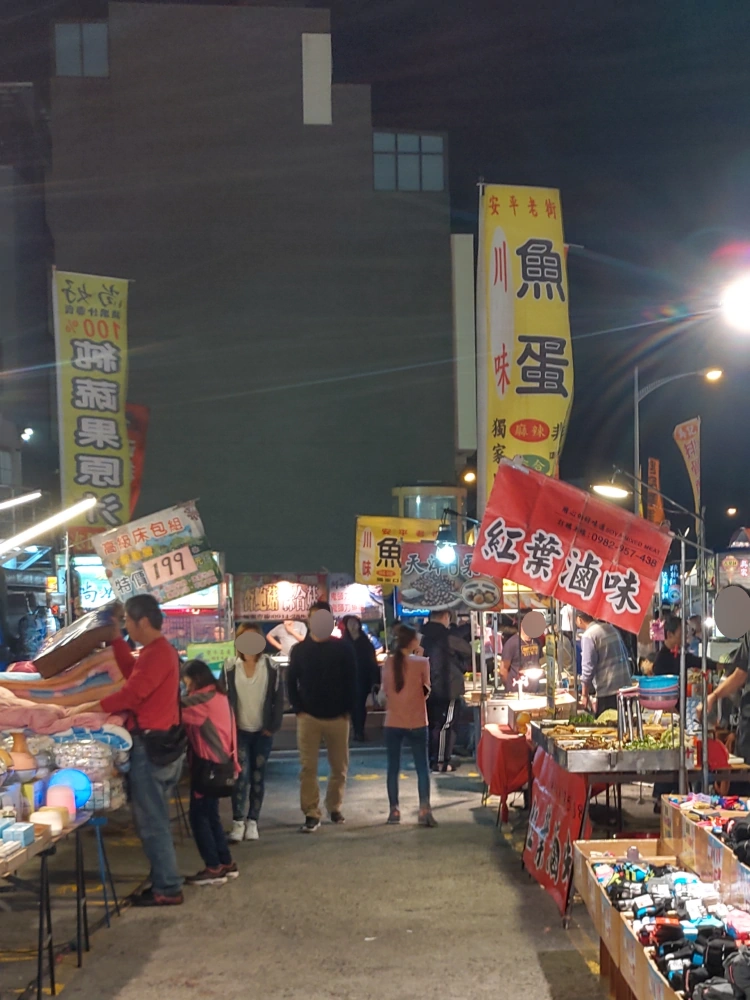
這家 尚好現榨蔬果原汁 一樣是買個西瓜汁。沒認真看，似乎是沒加水、沒加糖。當然，果汁的味道就淡一點。 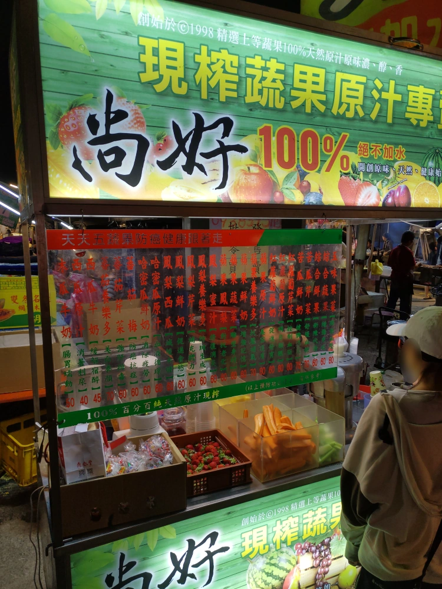
後山林記炸蛋蔥油餅 是 推薦名單當中的店家。 這家沒吃到，它星期六沒來，星期日要離開夜市了才來，照個像紀念一下。 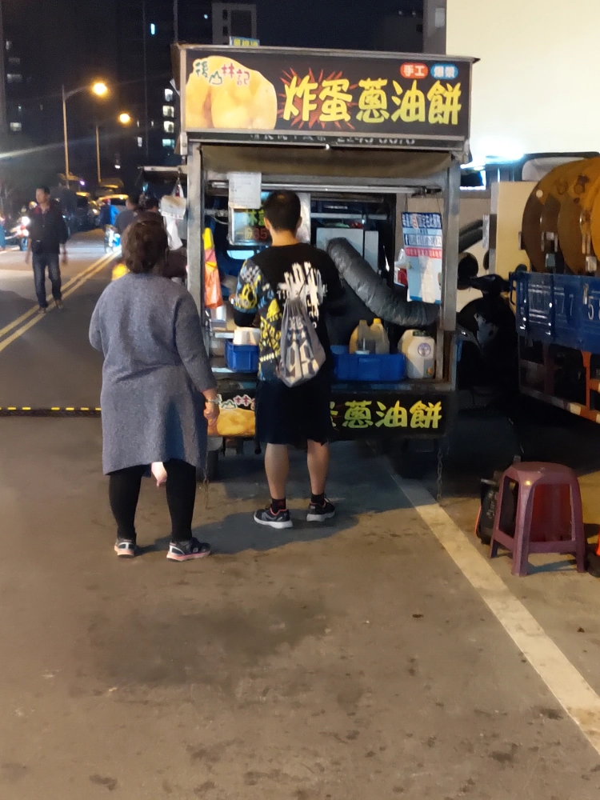
德記香酥雞 也是推薦名單當中的店家，只有星期天有來擺攤。 老闆是喑啞人士，我口頭點餐後，老闆用手指著調味料牌子讓我選， 我選最傳統的胡椒口味。 雞肉炸的不錯，而且無骨，胡椒粉的味道如果是鹹一點的胡椒鹽，應該會再好吃一些。 這攤推薦。 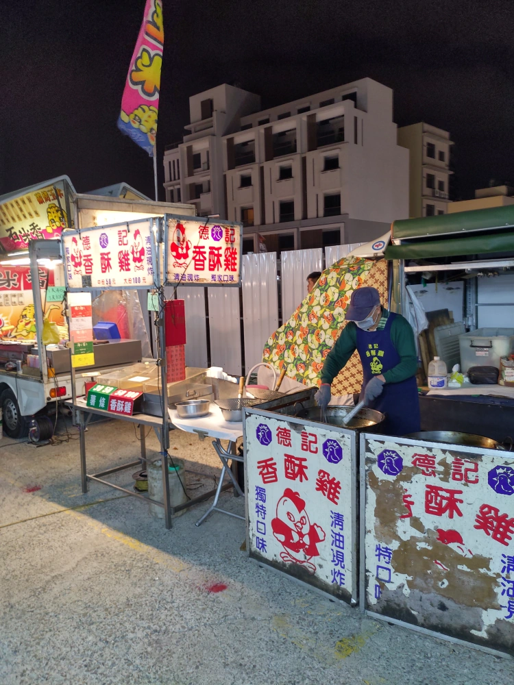 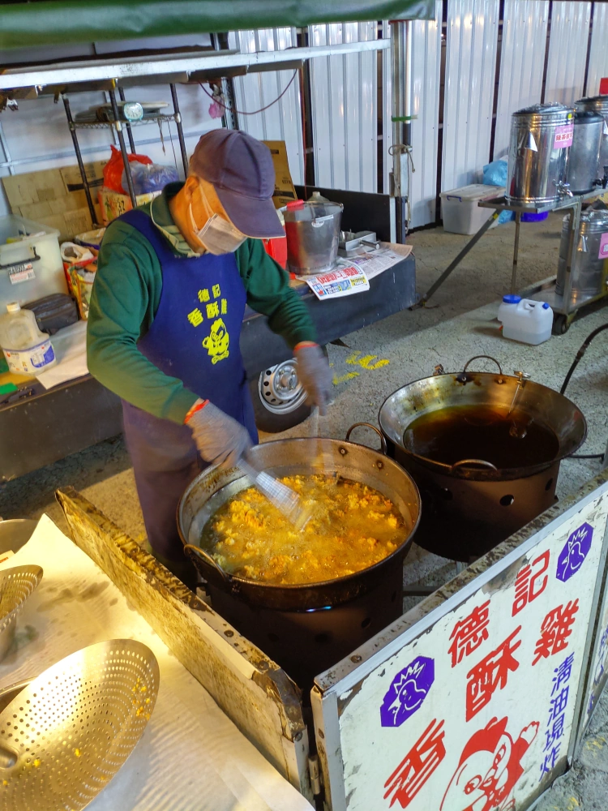
凰巢鹹水雞，注意，是凰不是鳳喔，中間是個皇字。人時多時少，生意算不錯，也有網友推薦過。不過我覺得還是比不上竹北三民路那兩家鹹水雞名店。 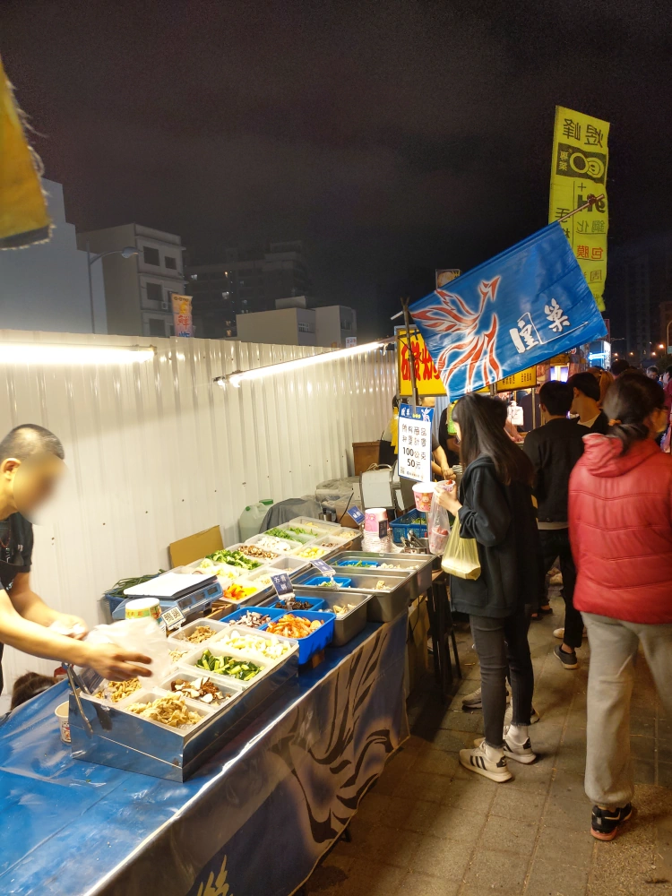
西班牙油條，有網友推薦過，只有星期天有來擺攤。有位老外駐店，更增添西班牙的真實性。 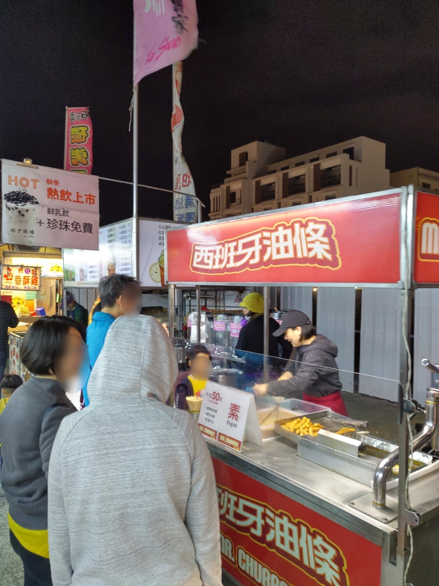
這張照片不是要介紹攤販，是介紹手上這根西班牙油條，甜甜軟軟的，不錯吃耶。 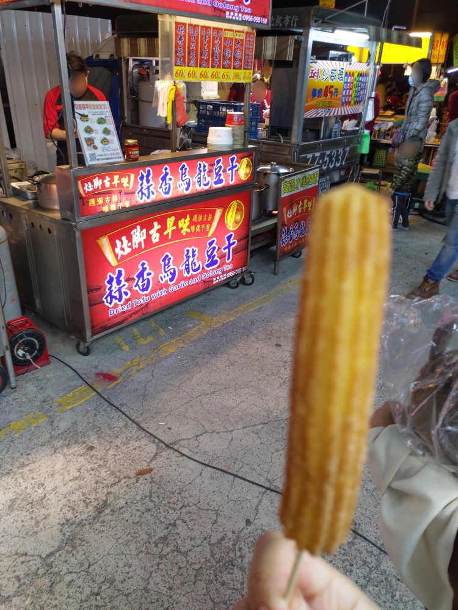
炭烤珍珠玉米，覺得味道中規中矩，價格合理，有用旋轉的機器輔助烤玉米，可推薦。 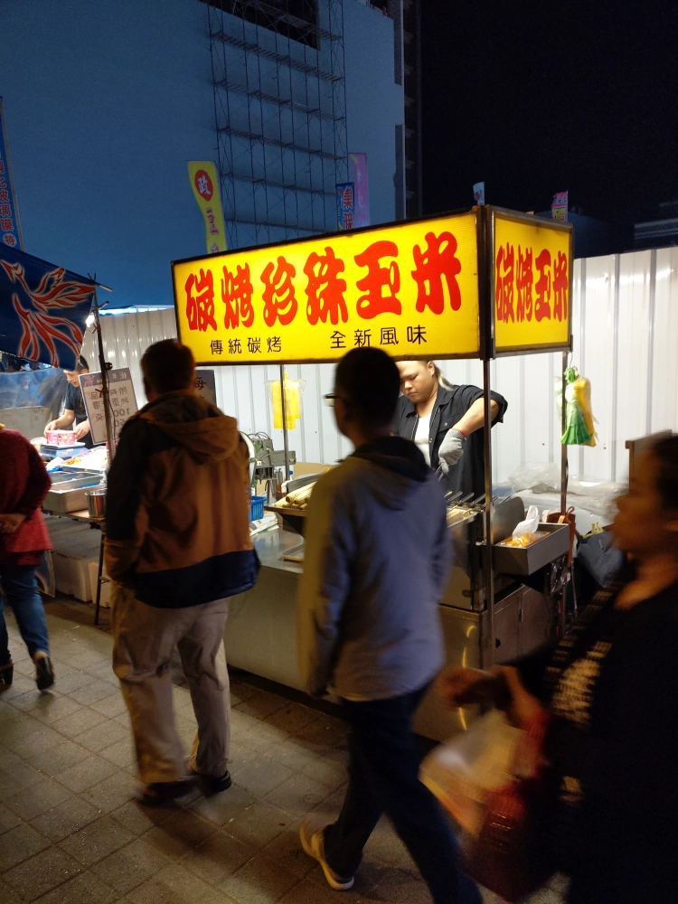
夜市這種地方，最好還是能夠先查一下口碑，比較不會踩到雷，下次有機會，試試其他攤位，再來報告。 如果網友要推薦攤位，也很歡迎。